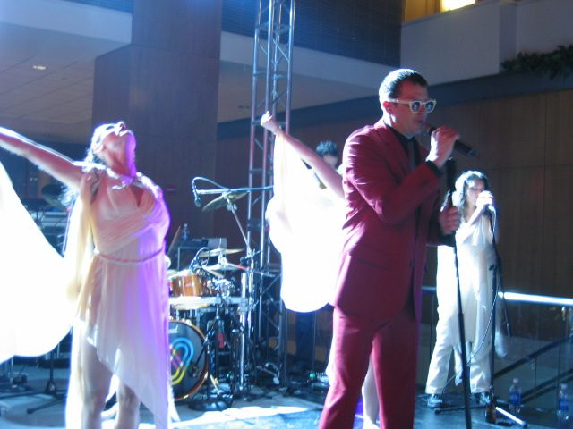

Fischerspooner: That's entertainment



“I’ve been on a major label releasing records and in basements rehearsing shows that nobody will ever see, hear or understand. These are the two extremes of my career.” Eight years after he became the figurehead and best-known face of electroclash, Fischerspooner frontman Casey Spooner remains perched on the cutting edge of cool, revered by a new wave of club kids and recognised more and more for the art ideas he’s always presented.
Recently turning 40, he’s chatting to ITM to promote Fischerspooner’s new, and third album Entertainment, a title laden with significance, he explains. “To be somewhere in between experimental and mainstream is the goal. If you are so pop you end up saying nothing and doing nothing because it’s too cliché, but if you’re too experimental you become inaccessible and too difficult to decipher.”
“I love working with major labels and also the small art shows, I love the weaknesses and the strengths of both pursuits,” he smiles. “These projects satisfy me entirely, much more that if I was just a painter or if I was just a singer. Though always being on the brink presents disadvantages to. At EMI, for example, they just didn’t know where to place us. Our songs sounded pop, but were way too long to be released as singles. We had guitars and we had dance sounds, they just couldn’t market us in a traditional sense.”
With Fischerspooner almost splitting up several years ago, Entertainment is a personal triumph for Casey and musical partner Warren Fischer, reflecting each’s commitment to making accessible ‘art’. “It’s what the project has always been about, our relationship with ‘entertainment’,” he explains, “It’s about walking that line between art and entertainment and bringing the love we have for both things together. I feel most comfortable in the position of being an artist doing something that brings entertainment,” Casey continues, “It gives me enough distance to approach the whole thing as a character. I am free to play a role that I wouldn’t be able to play otherwise, not in a play or a movie or whatever. It’s a fun part to play.”
How was the recording process this time?
It’s been different on every record. On this one I first started recording with members of our touring band. We wrote little snippets and then we handed them over to Warren. That was the first time songs started with vocal memories and lyrics as opposed to musical tracks first. Then he would pick and choose what he liked and build around them. Sometimes I would take pieces out that I wrote on other songs and transpose them. But I think this whole new process we adopted helped because it made the vocals more expressive instead of just being locked into music.
Tiga told me last week that he’s funded his new album from DJing: how much does doing it on your own label involve you and Warren basically paying for everything and taking a gamble?
Oh, totally. You just have to raise the money from every source you can and just re-invest it into your business. It’s a struggle. The other thing was that Jeff Saltzman really gave us this record, because he essentially built us a studio in Carriage House, in Brooklyn, and funded and produced the entire album. But not to have endless amounts of money can be good, it’s an OK place to be to be working within limitations, because it forces you to be more creative with what you have. What I wish for is to have limitations up to a point and then, once I’ve got my core of the project up, then have a little more financial freedom to pour on the backing, because at that stage you know what you’re doing, you’re not just wallowing around.
You went through a rollercoaster ride in the last 8 years: how close did you come to splitting Fischerspooner?
Oh, really, really close. On our last album Odyssey three months into recording I was just ready to walk away. We championed through it though. Even on this record, initially, I wasn’t entirely sure if I would work with Warren again, but in the end this was the record that brought us back together. When I first started writing, a lot of the songs weren’t for him. I was going to keep some for myself. Then I quickly realised that I couldn’t, creatively speaking, make two records at the same time, so eventually turned everything over to him.
Fischerspooner became a lightning rod for people fearing electroclash: how difficult was it to avoid feeling hurt by so many people wanting you to fail?
I’ve always found that there was an equal part of people who wanted us to succeed to those who wanted us to fail. It got tedious at a certain point; you wanted to say, ‘Can you all stop and listen to what we’re actually doing?’ It was mainly the critics, because the audience was always there. That’s what made me continue, the audience, the kids who loved us and embraced us. And now we’ve got this new bunch of kids who were not even there at the time, who are following us. They’re raised on Justice and MSTRKRFT, this whole New Electro French sound, and to them, of course it’s all new.
How difficult was it to avoid feeling jealous when Scissor Sisters came along and sold millions, doing much the same as you?
To me there’s no jealousy because we don’t look the same and we sound nothing like them. I know them, they’re friends of mine too. We’re not the same. To me they sound like 70’s pop rock, I think I’m doing something that is more avant-garde, more about performance, celebrating spectacle and having fun with these assumptions in pop culture like lip-synching. We embraced lip-synching as a theatrical idea. We’re about taking these ideas and pushing them to the extreme. This is not what Scissor Sisters are. Anyway I’m a big fan of Scott and Jason, we’ve been friends from way before they became famous and actually Jason credits me as his inspiration for starting the band because he saw us performing in Barcelona and he said it was the most amazing thing he’s ever seen. And we actually just wrote a song together. We don’t know where we’ll place it yet, for the moment it’s just sitting around.
Fischerspooner’s Entertainment is out now through FS Studios/Inertia.